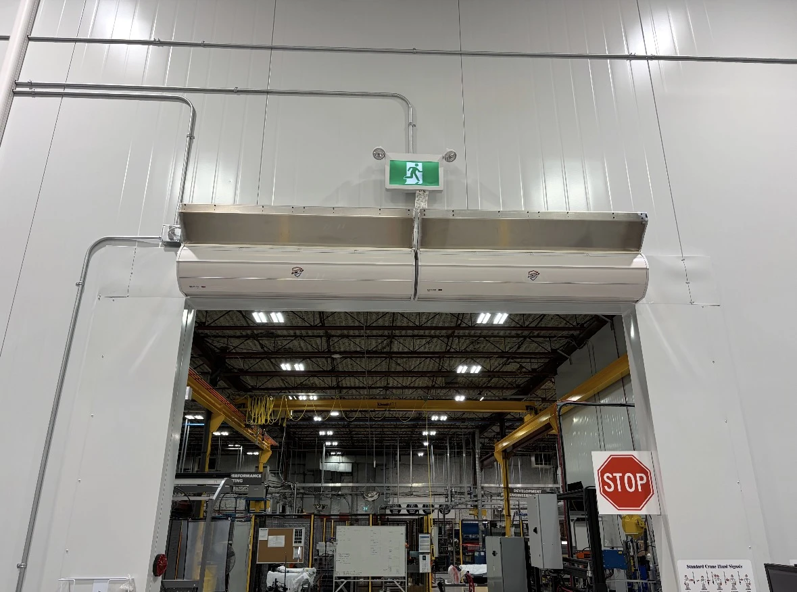
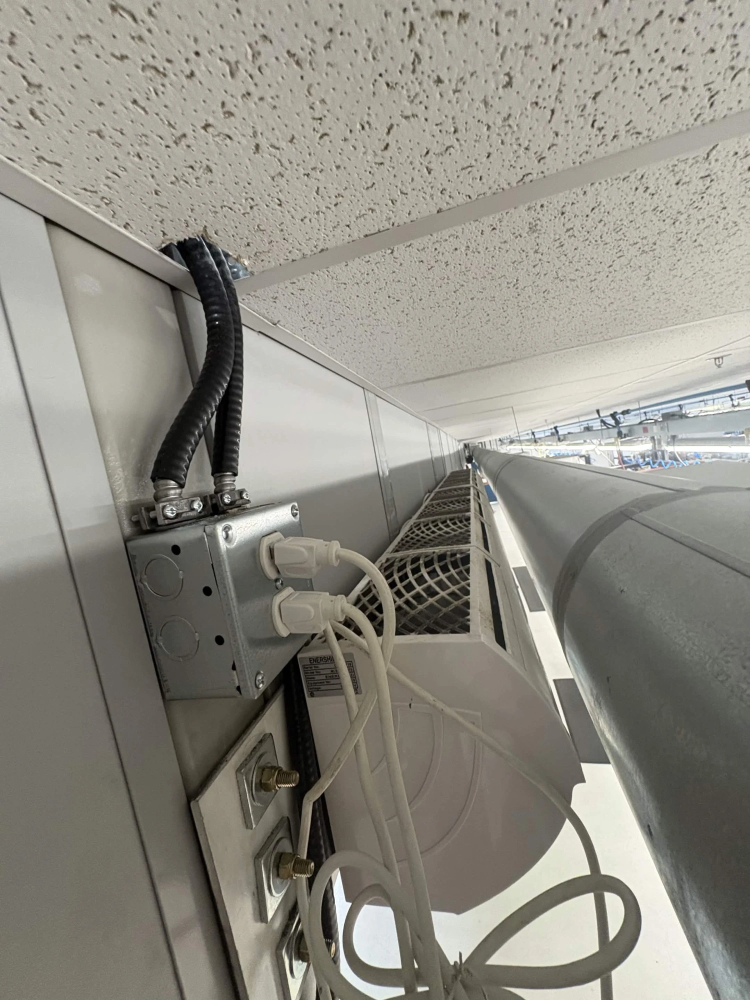
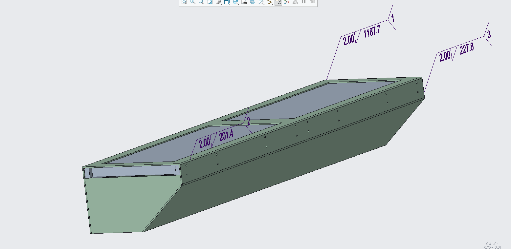
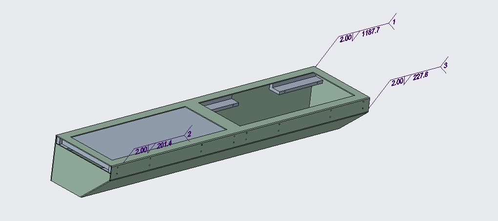
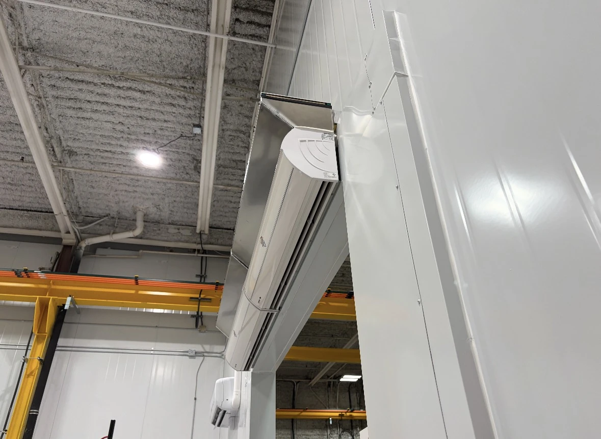

Dometic · Co-Op · Fall 2025 — Spring 2026
Air Barrier Filtration System
A filtration retrofit designed from scratch in Creo for Dometic's warehouse air barriers — stopping airborne oil and dust from CNC machines and lathes from being drawn straight into the intakes and out the other side.

Overview
Dometic Vancouver runs air barriers across two buildings to hold climate-controlled conditions in certain closed-off spaces. Near the CNC machines and lathes, the barriers' intakes were pulling in airborne condensed oil and feeding it straight through the unit — oil was landing on the floor below and creating slipping hazards. In the other building, the same intakes were pulling in enough dust and debris to raise concerns about what was being recirculated through the space. My job was to come up with a fix for both, and there was no off-the-shelf part for it: I measured every air barrier individually and designed a filtration housing for each one from scratch in Creo.
The idea itself was simple — put a filter in front of the intake — but the execution wasn't. Several installs had a pipe, wall, or other obstruction sitting right where a housing needed to go, so each one had to be designed around its own environment rather than off a single template. I also pushed to keep the design as universal as possible across units, so a future replacement or maintenance job wouldn't mean re-engineering the part from scratch. After a field-tested prototype revealed the first housing was oversized and restricting airflow, I redesigned it around a smaller, standardized filter and split it into left/right-specific housings so a filter can be swapped from one side without disturbing the rest of the unit. Preliminary airflow analysis in Creo puts the current design at roughly 5–8% airflow leakage while blocking the vast majority of oil and dust that used to pass straight through.
Design & Build
Building the Retrofit
From measuring around obstructions on-site to a redesigned, field-validated housing installed across the warehouse.

Measuring Around Real Constraints
Before any CAD work, every air barrier got measured in person — not just its opening, but everything around it. This location is a good example of why: an existing pipe run sat right where a housing needed to mount, so the design had to route around it instead of assuming a clean, obstruction-free intake. Across two buildings and eight air barriers, almost none of the installs were identical, which meant the housing geometry had to be worked out case by case rather than stamped from one drawing.

Modular Housing in Creo
Each housing is a custom sheet metal shroud that mounts directly over an air barrier's intake, angled and dimensioned to fit its specific install — this one built out to 1187.7 mm long with a 227.8 mm intake face. Rather than one-off every unit, I kept the design language consistent across all eight: same mounting logic, same fastener pattern, same general proportions, so the units read as one system instead of eight unrelated fabrications.

Filter Retention & Fabrication
Inside the housing, a retention lip holds the filter media in place against airflow. The sheet metal shells were cut, bent, and welded by an outside metal shop, and I designed custom 3D-printed inserts in-house that screw into the housing to lock the filter in position — a part that would've been slow and expensive to get cut from metal, but was fast and cheap to iterate on as a print. Every dimension carried real tolerances, since a housing that was even a little off wouldn't seat cleanly against the barrier it was built for.
Prototype Testing & Redesign
I installed and ran the first prototype in the field for several months. It worked — oil ingress dropped to almost nothing — but it also revealed the problem with a first design: the housing was sized around a filter that was noticeably bigger than it needed to be, roughly 10 in × 24 in against a standard-size 10 in × 23 in filter, which left extra width and hurt airflow. I redesigned the housing around a smaller, standardized 23 in × 10 in × 1 in MERV-8 pleated filter, shrank the shroud to match, and reworked the insertion mechanism into left- and right-specific housings so a filter can be pulled and replaced from one side without needing clearance on both.
Building 1 — Dock Doorway
A pair of finished units installed above one of the main dock doorways, running the full width of the opening. Getting two housings to sit flush against each other while still each mounting cleanly to their own barrier was one of the tighter fits on the project — there was very little margin to work with once both were in place.

Building 1 — Corner Mount
A single-unit install at a building corner, where the housing angles along the barrier rather than sitting flush to a flat wall. Corner and edge locations like this one were where the case-by-case measuring paid off most — a templated housing simply wouldn't have mounted cleanly here.
Full Write-Up
Term Report
The technical report I submitted to SFU covering this project in detail, alongside the SCADA Asset Management System work from the same co-op term.